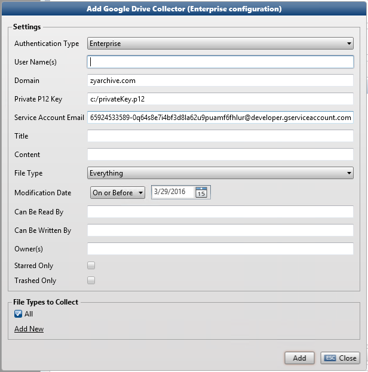

The Google Drive Collector collects files from the Google Docs site: http://docs.google.com

ZyLAB Legal Processing uses two-legged OAuth for domain-wide delegation of authority, so user data can be accessed without the need to know a user's password. Users do not need to give consent on an individual basis, as this decision is made on their behalf by the administrator.
User Name(s)
Define the Google account(s) of the person(s) you want to collect from, comma separated, without the domain.
Password (Default)
Define the password(s) of the person(s).
Domain (Enterprise)
You selected Enterprise as the Authentication Type. The Domain will be provided by your Administrator. Do not include the @ symbol.
Private P12 Key (Enterprise)
You selected Enterprise as the Authentication Type. The Private P12 Key is the UNC path to the Private key for Google Service Account. It will be provided by your Administrator.
Service Account Email (Enterprise)
You selected Enterprise as the Authentication Type. The Service Account Email (or Client ID of the Service Account) will be provided by your Administrator.
Title
Collect by the name or title of the file.
Content
Collect by the words that are used in the file (use AND and OR as operators).
File Type
Collect by the type of document. This covers: document, spreadsheet, presentation, drawing, image, video, fusion tables, and scripts.
Modification Date
Collect by a defined date range of last document modification in the Google Docs site.
The date range is not dynamically adjusted. For example, when you choose to collect everything until today (inclusive) and want to rerun the same collection action the next day, it will collect everything until yesterday (inclusive).
Can Be Read By
Collect files of users who have permissions to read the document. Define the email address.
Can Be Written By
Collect files of users who have permissions to modify the document. Define the email address.
Owner(s)
Collect according to who owns the files. Define the email address.
Starred Only
Select if you want to collect only files that are marked with a star.
Trashed Only
Select if you want to collect only files that are in the Bin.
|
|
|